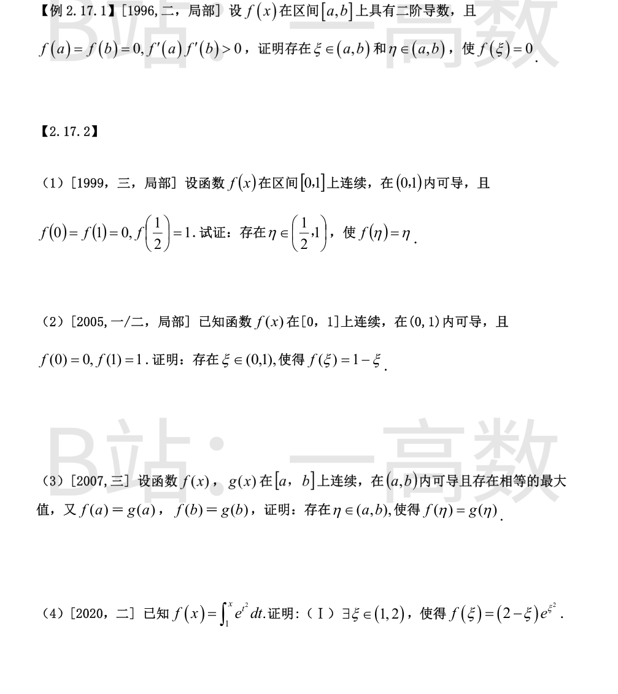
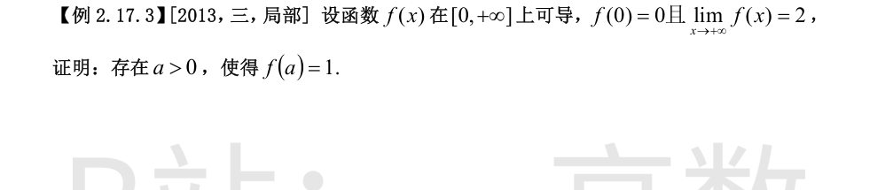
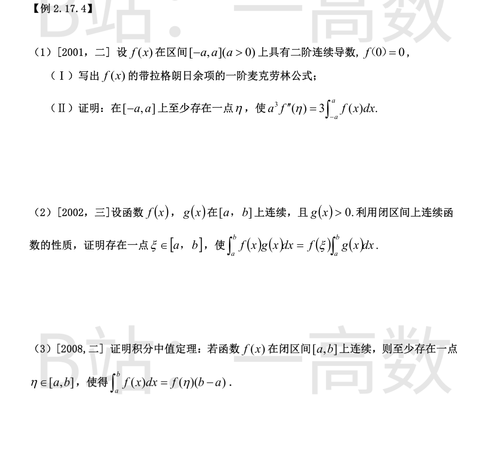

因 $f'(a)f'(b)>0$，不妨设 $f'(a)>0,\ f'(b)>0$（若同为负，对 $-f$ 作同样论证即可）。
由右导数定义
$$\lim_{x\to a^+}\frac{f(x)-f(a)}{x-a}=f'(a)>0,$$
故存在 $\delta_1>0$，当 $x\in(a,a+\delta_1)$ 时 $\dfrac{f(x)-f(a)}{x-a}>0$，即 $f(x)>f(a)=0$；取 $x_1\in(a,a+\delta_1)$ 使 $f(x_1)>0$。
同理由
$$\lim_{x\to b^-}\frac{f(x)-f(b)}{x-b}=f'(b)>0,$$
当 $x<b$ 且充分接近 $b$ 时 $x-b<0$，故 $f(x)-f(b)<0$，即 $f(x)<0$；取 $x_2\in(b-\delta_2,b)$ 使 $f(x_2)<0$，且可使 $x_1<x_2$。
$f$ 在 $[x_1,x_2]$ 上连续，且 $f(x_1)>0>f(x_2)$，由零点定理，存在 $\xi\in(x_1,x_2)\subset(a,b)$ 使 $f(\xi)=0$。

令 $g(x)=f(x)-x$，则 $g$ 在 $\left[\dfrac12,1\right]$ 上连续，且
$$g\!\left(\frac12\right)=f\!\left(\frac12\right)-\frac12=1-\frac12=\frac12>0,\qquad g(1)=f(1)-1=0-1=-1<0.$$
由零点定理，存在 $\eta\in\left(\dfrac12,1\right)$ 使 $g(\eta)=0$，即 $f(\eta)=\eta$。
【仲裁修正】独立校验发现分歧，经仲裁重解，以本答案为准：B 给出的结论 \exists a>0 使 f(a)=1 是另一小题（存在 a>0 使 f(a)=1）的结论，与本小题要求的 f(\eta)=\eta（\eta\in(1/2,1)）不一致，solver 与 A 的结论正确
令 $g(x)=f(x)+x-1$，则 $g$ 在 $[0,1]$ 上连续，且
$$g(0)=f(0)+0-1=-1<0,\qquad g(1)=f(1)+1-1=1>0.$$
由零点定理，存在 $\xi\in(0,1)$ 使 $g(\xi)=0$，即 $f(\xi)=1-\xi$。
设 $f,g$ 的公共最大值为 $M$，它在开区间内被取得：存在 $x_1,x_2\in(a,b)$ 使 $f(x_1)=M,\ g(x_2)=M$。
令 $h(x)=f(x)-g(x)$，则 $h$ 在 $[a,b]$ 上连续，且
$$h(x_1)=M-g(x_1)\ge 0\quad(\text{因 } g(x_1)\le M),\qquad h(x_2)=f(x_2)-M\le 0\quad(\text{因 } f(x_2)\le M).$$
若 $h(x_1)=0$，取 $\eta=x_1$；若 $h(x_2)=0$，取 $\eta=x_2$；否则 $h(x_1)>0>h(x_2)$，由零点定理存在介于 $x_1$ 与 $x_2$ 之间的 $\eta\in(a,b)$ 使 $h(\eta)=0$。
综上，存在 $\eta\in(a,b)$ 使 $f(\eta)=g(\eta)$。
令 $g(x)=f(x)-(2-x)e^{x^2}$，则 $g$ 在 $[1,2]$ 上连续。由 $f(1)=\displaystyle\int_1^1 e^{t^2}dt=0$，
$$g(1)=0-(2-1)e^{1}=-e<0,\qquad g(2)=f(2)-0=\int_1^2 e^{t^2}\,dt>0.$$
由零点定理，存在 $\xi\in(1,2)$ 使 $g(\xi)=0$，即 $f(\xi)=(2-\xi)e^{\xi^2}$。

**(Ⅰ)** 对任意 $x\in[-a,a]$，带拉格朗日余项的一阶麦克劳林公式为
$$f(x)=f(0)+f'(0)\,x+\frac{f''(\xi)}{2!}\,x^2,$$
其中 $\xi$ 介于 $0$ 与 $x$ 之间（可写为 $\xi=\theta x,\ 0<\theta<1$）。由 $f(0)=0$ 得
$$f(x)=f'(0)x+\frac{x^2}{2}f''(\xi).$$
**(Ⅱ)** 将上式在 $[-a,a]$ 上积分。$f'(0)x$ 为奇函数，在对称区间上积分为零，故
$$\int_{-a}^{a}f(x)\,dx=\frac12\int_{-a}^{a}x^2 f''(\xi_x)\,dx,$$
其中 $\xi_x$ 介于 $0$ 与 $x$ 之间。记 $m=\min\limits_{[-a,a]}f'',\ M=\max\limits_{[-a,a]}f''$，由 $x^2\ge0$ 得
$$\frac{m}{2}\int_{-a}^{a}x^2dx\le\int_{-a}^{a}f(x)dx\le\frac{M}{2}\int_{-a}^{a}x^2dx,\qquad \int_{-a}^{a}x^2dx=\frac{2a^3}{3},$$
即 $\dfrac{a^3}{3}\,m\le\displaystyle\int_{-a}^{a}f(x)\,dx\le\dfrac{a^3}{3}\,M$，于是 $\dfrac{3}{a^3}\displaystyle\int_{-a}^{a}f(x)\,dx\in[m,M]$。由 $f''$ 在 $[-a,a]$ 上连续及介值定理，存在 $\eta\in[-a,a]$ 使
$$f''(\eta)=\frac{3}{a^3}\int_{-a}^{a}f(x)\,dx,\qquad\text{即}\quad a^3f''(\eta)=3\int_{-a}^{a}f(x)\,dx.$$
【仲裁修正】独立校验发现分歧，经仲裁重解，以本答案为准：A 给出的是另一小题（存在 a>0 使 f(a)=1）的介值定理解答，与本小题（泰勒公式及积分后得 a^3f''(\eta)=3\int_{-a}^a f dx）的结论无关，solver 与 B 的结论一致且正确
$f$ 在 $[a,b]$ 上连续，故取得最小值 $m$ 与最大值 $M$：$m\le f(x)\le M$。由 $g(x)>0$ 知 $\displaystyle\int_a^b g(x)\,dx>0$，且
$$m\int_a^b g(x)\,dx\le\int_a^b f(x)g(x)\,dx\le M\int_a^b g(x)\,dx,$$
两边除以 $\displaystyle\int_a^b g(x)\,dx$：
$$m\le\frac{\displaystyle\int_a^b f(x)g(x)\,dx}{\displaystyle\int_a^b g(x)\,dx}\le M.$$
该比值介于 $f$ 在 $[a,b]$ 上的最小值与最大值之间，由闭区间上连续函数的介值定理，存在 $\xi\in[a,b]$ 使
$$f(\xi)=\frac{\displaystyle\int_a^b f(x)g(x)\,dx}{\displaystyle\int_a^b g(x)\,dx},\qquad\text{即}\quad\int_a^b f(x)g(x)\,dx=f(\xi)\int_a^b g(x)\,dx.$$
设 $m,\ M$ 分别为 $f$ 在 $[a,b]$ 上的最小值与最大值（最值定理），则 $m\le f(x)\le M$，从而
$$m(b-a)\le\int_a^b f(x)\,dx\le M(b-a),\qquad\text{即}\quad m\le\frac{1}{b-a}\int_a^b f(x)\,dx\le M.$$
记 $\mu=\dfrac{1}{b-a}\displaystyle\int_a^b f(x)\,dx\in[m,M]$。由闭区间上连续函数的介值定理，存在 $\eta\in[a,b]$ 使 $f(\eta)=\mu$，即
$$\int_a^b f(x)\,dx=f(\eta)(b-a).$$
（此即上一题取 $g(x)\equiv1$ 的特例；用推广的积分中值定理亦可直接得到。）